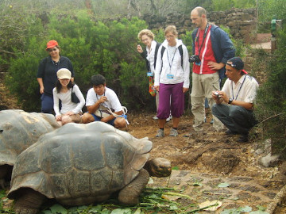

Welcome to the World of FlashTravel and Friends
FlashTravel and Friends is a team built on top of 20 years of experience and hundreds of acknowledgements from customers who trusted their holidays in our hands. It is also the most reliable source to choose vacations since we carefully test and select Ecuadorian suppliers, from the most budget to the most luxurious, with compact, impartial, reliable and accurate information as we personally keep an eye on the worth of their services day by day.
Ecuador is the smallest of the Andean countries blessed by the highest diversity on earth, on an area half the size of France. Its four regions exemplify the major ecosystems of South America. In Ecuador we have two Cultural Heritage Cities: Quito and Cuenca. Three UNESCO Natural Heritage sites: Sangay and Galapagos Islands with its Marine Reserve. Guayaquil is waking up as “Pearl of the Ocean Pacific” and its Amazon Rain forest is closer than in any other country in South America.
Five Reasons to buy a tour Package from FlashTravel Inc.
Rate:
When you buy your vacation from a certified tour operator like us, you are taping into our huge bulk buying power. Tour Operators carry thousands of travelers, which afford a significant volume discount on all our services.
Convenience:
FlashTravel has already done all the research and visited all the places in the tours we sell. This means all you have to do to prepare the perfect vacation with a call, e-mail or chat at alexbarragan@hotmail.es This e-mail address is being protected from spambots. You need JavaScript enabled to view it.
Experience and Access:
FlashTravel is an EXPERT on the destinations we handle. Please remember that on our Escorted Tours, you will learn and experience more than by traveling on your own, we provide access to places that otherwise are closed to general public, places like the Indian Communities, cloisters, etc.
Assurance:
Traveling with FlashTravel provides an extra measure of assurance. In the unlikely event anything should go wrong, company representatives are 24 hours ready to help you reschedule your entire itinerary.
Certification:
FlashTravel is a professional tour operator CERTIFIED by the Secretary of Tourism, Corporación Metropolitana de Turismo.


{kind=link}
{kind=link}
{kind=link}
{kind=link}
Francisco Jarrin
Francisco is our Chief Guide he is also one of the first guided to obtain certifications in Ecuador and has more than 20 years of Experience.
I just want to share with you the following comment that speaks for itself by one of our clients:
Reviewed May 13, 2014.
Francisco Jarrin was our guide in Ecuador for almost 2 weeks this spring. He immediately understood what we wanted to see and how we wanted to travel the country. He found us the perfect lodgings and took us to the places that we would have never seen without him. His vast knowledge of Ecuador and it’s history, culture, art, lifestyles, plants, birds, animals is amazing. Walking through old town Quito was a joy as he knew all the details of Quito itself and it’s history. Beyond Quito we traveled through the Andes to Cuenca and to the cloud forests of Mindo. Again his knowledge was amazing. He knew about the different Indian Cultures, their life styles, the wild life, the plants and where to stop for the best scenic view. I love photography and all I had to say was stop and we were over to the side of the road so I could get out and take photos. One of the highlights of our trip was a stay in Zueleta with a Quechua family. Actually living with the chief’s family and helping to cook dinner in their adobe kitchen with dirt floors and a cook fire in the corner. Francisco arranged this for us and for that I will always be grateful. He also took us to the cloud forest and we stayed with a family of Botanists that are returning their land to an indigenous forest. We saw 15 different species of Hummingbirds and 3 species of Tanagers (bright yellow and black birds) and we had a guided walk through the forest learning about the trees and plants of the cloud forest. We saw an Ecuador that most people don’t even know exists and it was all because of Francisco. Because he is licensed as a guide and naturalist he personally guided us through National Parks and Archeological sites. Without him we would have had to join a group tour or hire a guide.
Thank You Francisco!
{kind=link}
{kind=link}
Our Chef
Ecuador our beloved country with the priviledge of being located in the middle of the world we have the blessing of having all type of crops all year long, our land is full or cereals, crops, and some type of fishes in the highlands like the trout. In our lowlands, our coast we produce one of the best Cacaos in the world “cacao de fino aroma” which is valued like a piece of gold specially in Europe Our bananas also considered our green gold and our seas that produce many types of fishes, seafood with one of the biggest size shrimps. Places where naturally grow crabs, and together with the help of our farmers we have most of these products for exportation with very well know rewards worldwide.
Our roses won year after year the quality price, we have organic roses cultivated so we can include them in some gourmet preparations.
As a founder of Flashtravel and always thinking in developing new options for the people who make us the honor to choose Ecuador as their destination and in order to be able to attend our clients with the best quality service Alexandra Barragán have gotten the complete instruction of Chef and also from Weddings Beautiful Worldwide the Title of Wedding Specialist, with these plus all the previous preparation we are able to attend special meals for demanding clients. To introduce something really special as part of our developing services we offer indoor restaurant, gourmet cooking clases, Incentive programs with unique gourmet meals, your dream wedding and of course organize also with preparation in Israel handle Kosher services in combination with the Orthodox Rabbi.
You are welcome to try our delicious selection of meals that our beautiful country and as being part of our dreams, you our client as our most important partner will receive with your visit a traditional box hand painted with a selection of deluxe gourmet chocolates.
Thank you and we really appreciate for choosing us for your memorable vacation.
With warm regards,
Chef Alexandra Barragán
Company profile
Started operations in 1997 as the first Operator to use only Certified National Guides and Naturalists for mainland Ecuador; the slogan is Better guides, with better visits. We are the creators of the “Deluxe Mix” where we partner with the best suppliers. The assets growth of the company is one of the highest in Ecuadorian Economy and customer satisfaction reached 98% this year! Francisco Jarrín a well-recognized National naturalist III with over 10 years of experience and Alexandra Barragán holding a degree on Marketing Management has also worked for the largest Tour Operators in Ecuador established the company in 1997. We specialize in deluxe escorted tours for high demanding passengers, which are used only to the best of the best. We started Kosher services in Ecuador in 2006 with publication in the Jerusalem Post.
Operation level standards
-
Luxury
Specialists design your itinerary with comprehensive sightseeing, all-inclusive a la carte meals at the best restaurants, entertainment, folk shows, cocktail parties and personal service. Accommodations only at 5 star hotels, all gratuities included, a recognized travel gift. We offer gourmet lunch or dinner at the house of our Chef joining her family.
-
Deluxe
For discerning travelers that want a tour that is not the common tour. Accommodations are at smaller quaint lodges with all modern features. Include most meals at fine restaurants with set menus.
-
First Class
For travelers that wish to have preplanned activities and prepaid services, include essential meals.
-
Budget
Programs suited for travelers that need an introduction to Latin America, meals are not included and accommodations will be at the most convenient hotel or hostel.
Ecuador is the land of diversity; we call it “Diversiland” like our best selling itinerary. We are carefully divided by nature, yet solidly held together by a strong Indian heritage. Ecuador is a living encounter with magical realism between earth and heaven, its beauty of nature and Culture at is best: Follow the steps of Humboldt and Whymper in the Andes and its world heritage cities, swim along the Ocean Pacific a second Galapagos, explore the mysteries of the AMAZON jungle and the Galapagos Islands and Marine reserve. All in one trip!
The country also offers attractive value and shopping opportunities at low prices. Once the capital of the powerful Inca Empire, it is now a Democratic Republic ready to welcome you.
Entry Requirements
A valid passport is required to enter and depart Ecuador. Visas are not required if you're a citizen of the United States, the United Kingdom, Canada, Australia, New Zealand, South Africa, France, Germany, or Switzerland as our foreign relations policy is based on reciprocity. Upon entry, you will automatically be granted permission to enter for 90 days. Technically, to enter the country you need a passport that is valid for more than 6 months, a return ticket, and proof of how you plan to support yourself while you're in the country.
Health
No vaccinations are required for entry but we recommend to double check your particular health case with your physician before departure. However due to the high altitude ranges in some parts of Ecuador, travelers with heart conditions or high blood pressure should check with their doctors. Bottled water is advised everywhere. The country is almost FREE of the common tropical diseases. International Certificate of vaccination for yellow fever is required if arriving from infected area within 5 days.
Departure tax
There is a US$ 25 departure tax that must be paid in cash for those leaving on international flights from Quito and US$ 20 if leaving from Guayaquil.
Local time
Eastern standard or GMT - 5. There is no daylight savings time. In the Galapagos Islands it is GMT-6.
Money
The national monetary denomination WAS the Sucre, named after Field Marshal Antonio José de Sucre, heroe of our independence war. There were 1000, 5000, 10.000, 20.000 and 50.000 bills, 100, 500 and 1000 Sucre coins were also found. Since September 13, 2000 the US dollar is the official currency of Ecuador. In the denominations we all know.
Ecuador also coined smaller denominations to make trade easier. Please arrange always to pay exact amount, as change is difficult to be found.
Banking hours
Monday through Friday 09h00a.m. to 04h00 p.m. Some Banks have their own schedule and accept money exchange until 02h00 p.m. There are few ATM machines that can give you up to 400 per day.
Shopping hours
Monday through Friday, generally from 10h00 a.m. to 01h00 p.m. and 03h00 p.m. to 08h00 p.m. certain stores, shopping centers and markets may be open on Saturday and Sunday. Most establishments and offices honor “Siesta Time”.
Electricity
110 volts, 60 Hertz AC / 220 adapters and round plugs are difficult to find, bring your adapter from home in case you might need it, specially if coming from Europe.
Tipping
In Ecuador, restaurants, bars and hotels by law add 10% service charge to the bill. An additional modest gratuity (maximum 5%) is expected only if service has been particularly good. Minimum big group tipping for Certified Guides is $5.00 to $6.00 per person per day and drivers should be tipped about half that amount. For individuals and couples, tipping should be made taking into consideration the personalized service and your good judgment. Certified Naturalist should be tipped US$ 5-8 per person per day at National Parks. It is not necessary to tip taxi drivers.
Language
Spanish is the official language; Quechua is spoken by a large percentage of the native people although there are other primitive Indian languages at the Lowlands. English is spoken in hotels and First Class establishments: French or German only at specialized places.
Population
Approximately 13 million inhabitants’ mostly white “Mestizos” descendants of the Europeans that mixed with the local populations. There are more than 10 different Indian nationalities that hold 40% of the total population of the country.
Climate
Although its small size, changes in altitude and the effect of the cold ocean currents combine to give Ecuador virtually any possible type of climate. The Costa, the Sierra and the Amazon vary mainly in height, temperature and precipitation “seasonal changes in Ecuador are caused by amount of rainfall”.
- The coast has an average temperature of 32°C (90°F) in the hot rainy season from November to May. The rest of the year is dry with temperatures in the “teens” during the day and dropping at night.
- In the highlands the temperature varies with the altitude (about 2°C or 4°F by 200 meters or 656 feet of elevation). This explains why Quito is also called “the City of Eternal Spring”, because even though it is located just minutes south of the Equator at an altitude of 2850 meters (9.348 feet) above sea level and has an average temperature of 14°C (65°F) year round.
- At the Amazon: Tropical rain forest, the temperature ranges from 18°C to 36°C (70 to 105 ° F) with rainfall almost all year round, the coolest months are from December to May.
- The Galapagos Islands: The winds and ocean currents dictate the weather on the Galapagos, but this simple relationship is complicated by the archipelago's location at the confluence of two currents and two wind streams, so that the controlling forces change from season to season. Oceanic influences vary between the cool Humboldt Current from the coast of Peru, and the warmer Panama flow that arrives from the northeast. The dry season or the “garúa” season lasts from June or July through November. It is usually warmer from December to May, reaching up to 38°C (108 °F) at noon and Cooler in July and August down to 18 °C (68°F); it is cold enough to host sperm whales.
Clothing
Based on the climate information listed above and your good judgment, plan your visit to Ecuador. Dressing in the country is casual but locals like to dress up for dinner. Cotton clothing is useful don’t forget a raincoat. In general, dress as do it at home. Special travel conditions apply on holidays, please check dates http://www.feriadosecuador.net/